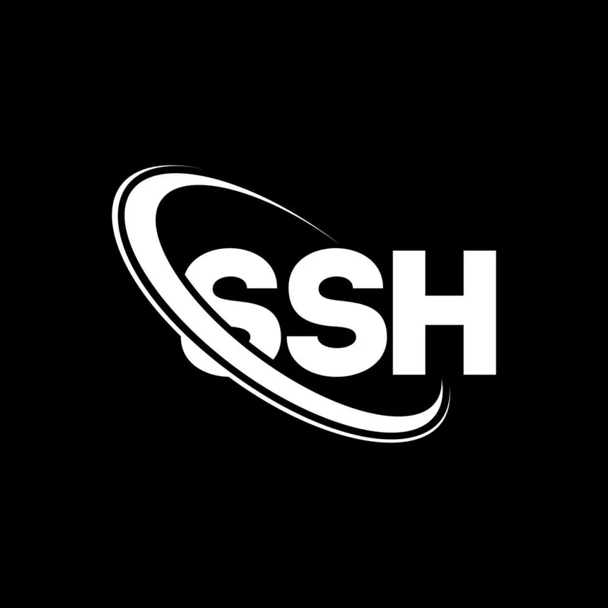

ACCES SSH
[PORT 22: OPENSSH 8.2]
Le service SSH est ouvert sur le port 22. Le banner indique une version OpenSSH standard sur un serveur Linux.
Vous devez choisir une stratégie pour obtenir un accès à la session sans vous faire repérer par le système de bannissement automatique (Fail2ban).